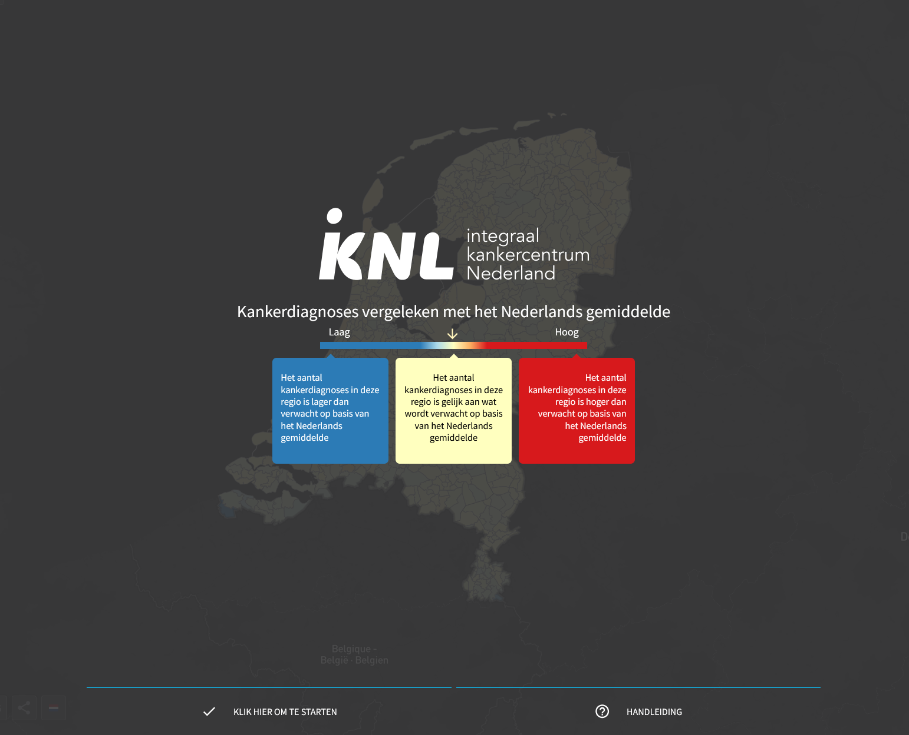
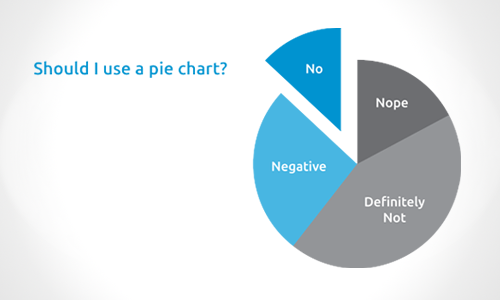

Vormgeving
Les 6: UX/IX design voor kaarten & API's met JavaScript
De zesde les was mijn favoriete les, waar we dieper op gebruikerservaring en interfaces zijn ingegaan. Ondanks dat we al eens een vak hebben gehad voor UI/UX design in het algemeen, waren deze lessen een ontzettende gaaf vervolg omdat we ook kennis toe hebben gepast van vorige lessen. Er kwamen zoveel handige tips voorbij, dat als dit een cursus was ik deze graag zou willen doen.
Een aantal van deze tips waren:
Less is more: De gebruikersmotivatie en complexiteit moeten een middelpunt vinden om succes te vinden, omdat bij teveel complexiteit de gebruiker afhaakt en bij te weinig complexiteit de gebruiker zich verveelt. Hetzelfde geldt voor de motivatie, als de gebruiker niet gemotiveerd is verlies je snel de aandacht. Daarom moet als je klikt, ook een actie gebeuren.
Gebruikerscontrole: Je moet de gebruiker laten zien wat hij kan manipuleren. Met dit punt geef je de gebruiker een gevoel van controle. En als je hem de juiste functionaliteiten geeft kan hij zelf de kaart manipuleren naar wens. Hierbij speelt gestalt weer een rol, omdat dingen die bij elkaar horen vaak niet bij elkaar worden gezet.
Kleurkeuze: Regenboogverlopen moeten we absoluut niet gebruiken in kaarten, omdat we het niet goed kunnen interpreteren. We denken dan het middelpunt van het verloop ergens anders ligt door onze associaties met kleuren, dus het is moeilijk om af te lezen.
Kill your darling: Behoud het nodige, zelfs als dit ten koste gaat van wat je hebt gemaakt. Een mooi voorbeeld hiervan is misschien de Pie charts van Microsoft Office. Er wordt veel gebruik van gemaakt, maar het menselijke brein heeft veel moeite met het interpreteren van de grootte van de taartpunten.
Voorzichtigheid met heat maps: Heat maps zijn een gevaar, omdat onze ogen het anders opnemen als een objectieve schaal. Ook de dichtheid (agglomeratie) van kaarten kan een probleem zijn.
Mijn belangrijkste leerpunten van de les zelf zijn, dat kaarten steeds interactiever worden en we moeten nadenken over wat een gebruiker kan manipuleren en waarom.

